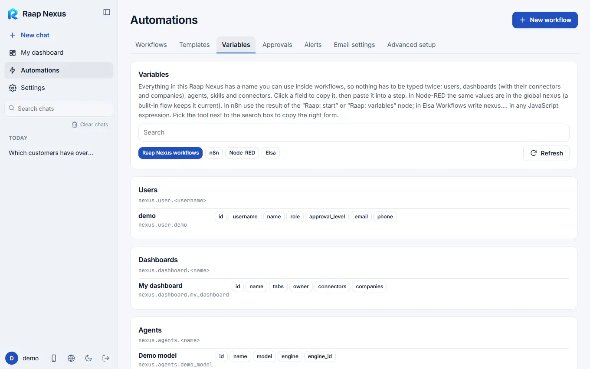
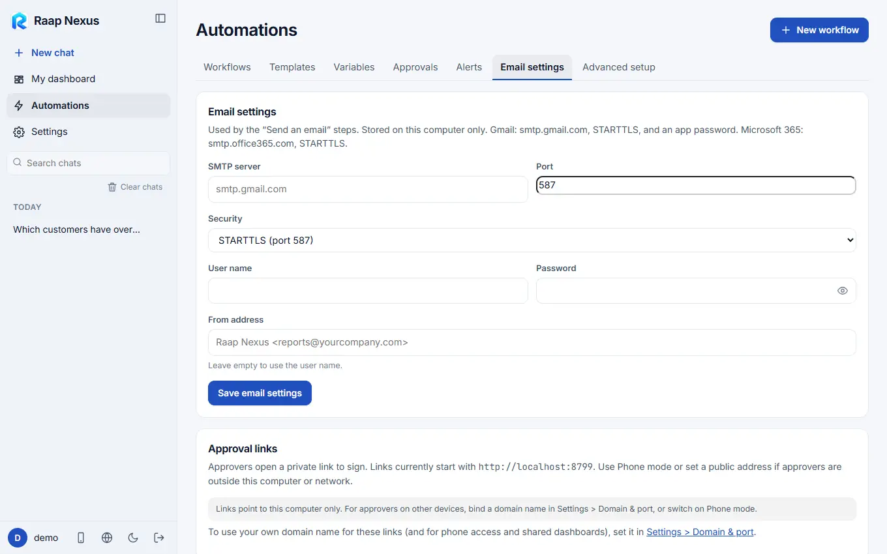
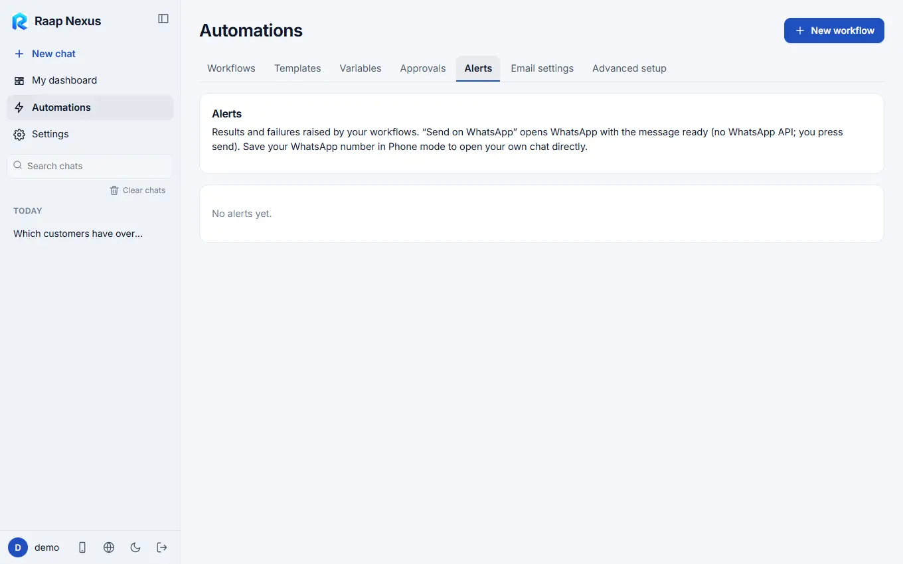
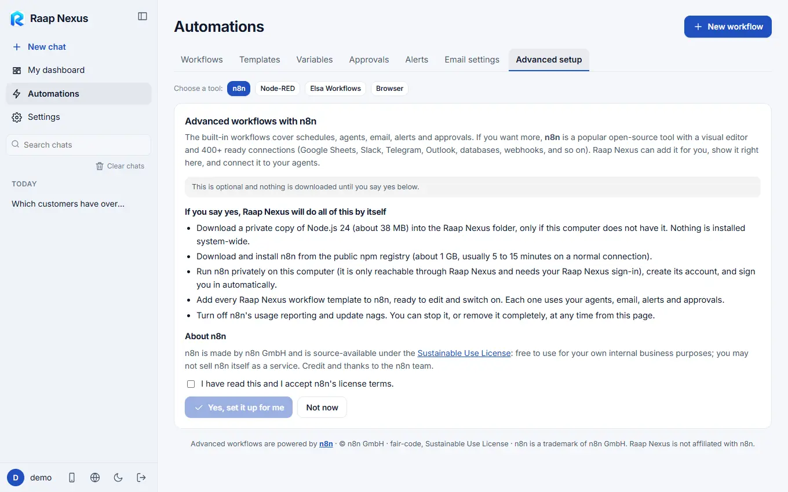

Raap Nexus
Raap NexusVariables, email, alerts and advanced setup
Nexus variables, the email server, alerts, the browser tool and the optional n8n, Node-RED and Elsa engines.
Variables
Everything in your Raap Nexus has a name you can use inside workflows, so nothing is typed twice: users, dashboards (with their connectors and companies), agents, skills and connectors. Open Automations > Variables, click a field to copy its name and paste it into a step. It is replaced with the real value each time the workflow runs.

Email settings
Automations > Email settings holds the mail server used by Send an email steps. It is stored on this computer only. For Gmail use smtp.gmail.com, STARTTLS and an app password; for Microsoft 365 use smtp.office365.com, STARTTLS. There is a test button.

Alerts
Alerts lists results and failures raised by your workflows. Send on WhatsApp opens WhatsApp with the message ready (there is no WhatsApp API in this; you press send). To get alerts as notifications, see My account and notifications.

Advanced setup
The built-in workflows cover schedules, agents, email, alerts and approvals. If you want more, Raap Nexus can add a visual engine next to it, run it privately on this computer (reachable only through Raap Nexus and your sign-in) and connect it to your agents. Nothing is installed system-wide.

| Engine | Good for | Download |
|---|---|---|
| n8n | A visual editor with 400+ ready connections (Google Sheets, Slack, Telegram, Outlook, databases, webhooks). | A private Node.js (about 38 MB) if needed, then n8n (about 1 GB, usually 5 to 15 minutes). |
| Node-RED | Flow-based automation with thousands of community nodes (MQTT and IoT, Modbus, databases, Telegram, email, HTTP). Popular on factory floors. | Node.js if needed, then Node-RED (about 150 MB). |
| Elsa Workflows | An open-source .NET engine with a visual designer, long-running workflows, timers and JavaScript expressions. | The .NET SDK (about 250 MB) if needed, then a build of about 1 GB. You accept the licence first. |
| Browser tool | Work on websites that have no connection to plug into: a supplier portal, a daily download, a form. | agent-browser (about 55 MB), checked against its published checksum. |
Each engine page has the same buttons: install, start, stop, open, and remove completely. Raap Nexus workflow templates can be added to the engine as ready-to-edit flows, each using your agents, email, alerts and approvals. A flow can ask an agent with a small call to Raap Nexus, and agents answer read-only from your connectors.
The browser tool, safely
- Every Use a web page step lists the sites it may visit; a page outside the list is left at once.
- Reading is free. A step that clicks or types needs an approved approval step before it, or your explicit tick on that step.
- For a site that needs a login, open a window, sign in yourself and press Done. Raap Nexus never sees your password. The kept login is stored encrypted.
- Websites have their own terms. Many do not allow automated use and may block the account. For WhatsApp use the official channel under Settings > Channels.